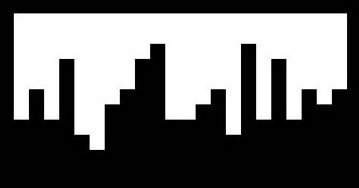

PORTFOLIO SITE
ABOUT
| 種類 | Webデザイン |
|---|---|
| 役割 | デザインからコーディングまですべて |
| 使用言語 | HTML, CSS, JavaScript |
| 制作時期 | 2017年1-2月 |
| 制作人数 | 1人 |

CONCEPT
何を伝え、どう感じて欲しいのかを特に意識して作成しました。
制作物だけでなく、それを通して人柄まで伝わるようにしました。
DESIGN

1. サブタイトルは英語に
2. 画面の種類を少なく
3. ナビゲーションバーを右側に
4. 背景をサブタイトルごとに変更
説明により目が行くように、日本語の説明との差別化を図った。
2. 画面の種類を少なく
トップ、プロフィール、プロジェクト詳細の3種類にしぼり、どのページを見ているのか分かりやすくした。
3. ナビゲーションバーを右側に
ナビゲーションバーよりも説明にある情報を伝えたい。そのため、左から右、上から下に動く人の視線を考えて、ナビゲーションバーを意識せずに説明を読めるようにした。
4. 背景をサブタイトルごとに変更
文字を読まなくても、異なる内容であることを分かるようにした。